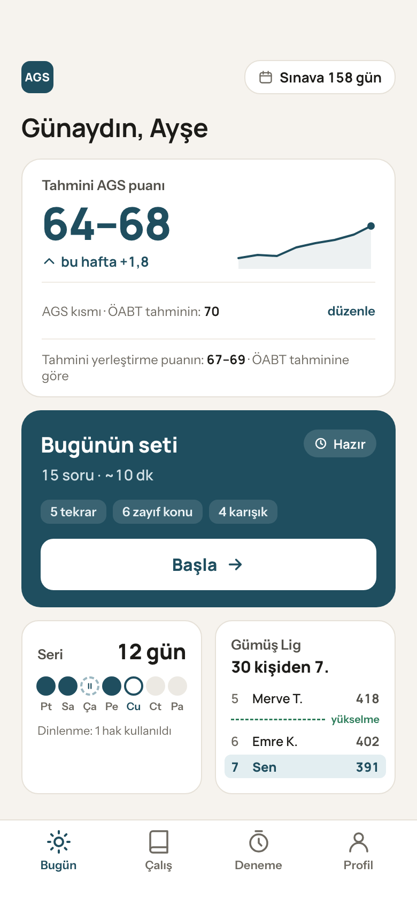
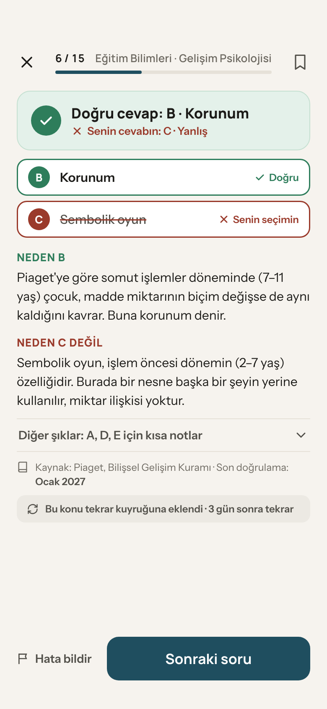
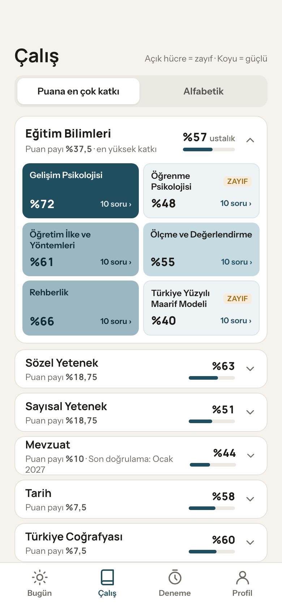
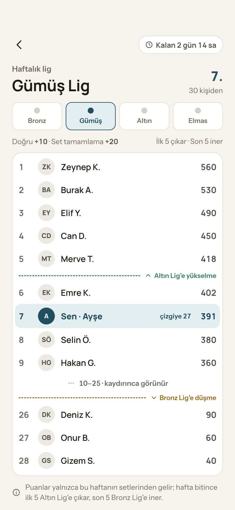

Net Up AGS
AGS'ye günde
20 dakika.
Otobüste, öğle arasında, on dakikalık parçalarla. Gündüz çalışan bir öğretmen adayı için kuruldu.

Tahmini puan
Tek bir sayı değil.
Dürüst bir aralık.
Örnek aralık
Az soru çözdüğünde aralık geniş durur, çözdükçe daralır. Nerede olduğunu, olduğundan kesin göstermeden söyler.
Bugünün seti
Her gün yeniden kurulan
15 soru.
Ne çalışacağını seçmekle vakit kaybetmezsin. Uygulama senin için seçer.
Her yanlışın bir nedeni var.
Neden doğru, neden öteki değil, hangi kaynağa dayandığı ve en son ne zaman doğrulandığı. Tek ekranda.

Unuttuğun an
geri gelir.
Yanlış yaptığın soru, aralıklı tekrarla yeniden karşına çıkar.
gün sonra
Eksiğini
haritada gör.
Her testin her alt konusunda ne kadar ustalaştığın, tek bakışta.

Her hafta,
30 kişilik bir lig.
Doğru cevaplar ve biten setler puan getirir. Üst beş bir üst lige çıkar.

Baskı değil, ritim.
Her biten set serini korur. Haftada bir gün kaçırırsan dinlenme hakkın kendiliğinden kullanılır.
Maskot yok.
Konfeti yok.
Suçlayan bildirim yok.
Günde en fazla bir hatırlatma, saatini sen seçersin. Reklam yok, üçüncü taraf takip yok.
Aralık'ta kapalı beta.
Ocak'ta App Store ve Google Play'de.
Beta davetinden haberdar olmak istersen bir satır yazman yeter.
Beta'ya katıl